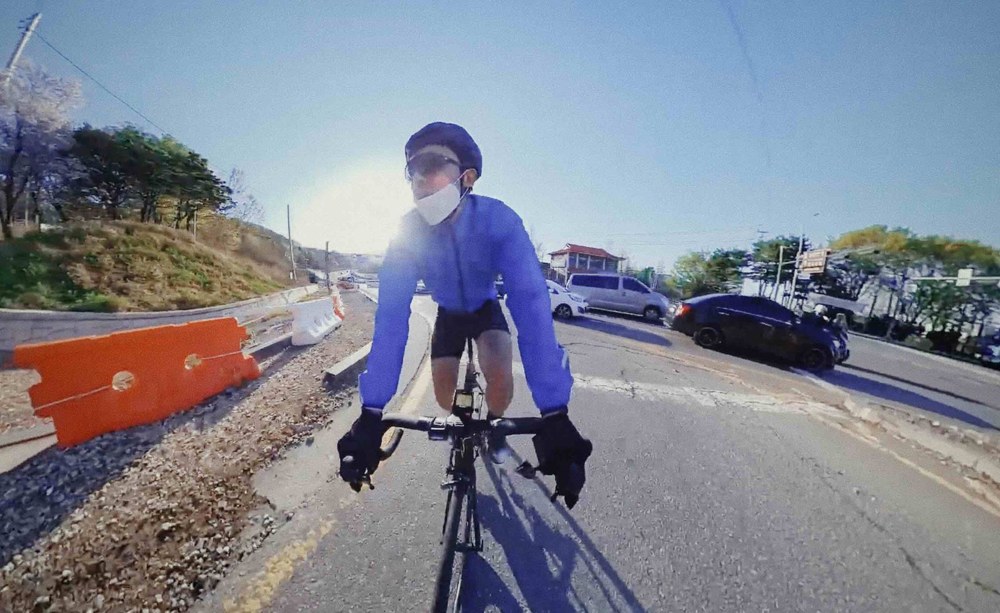
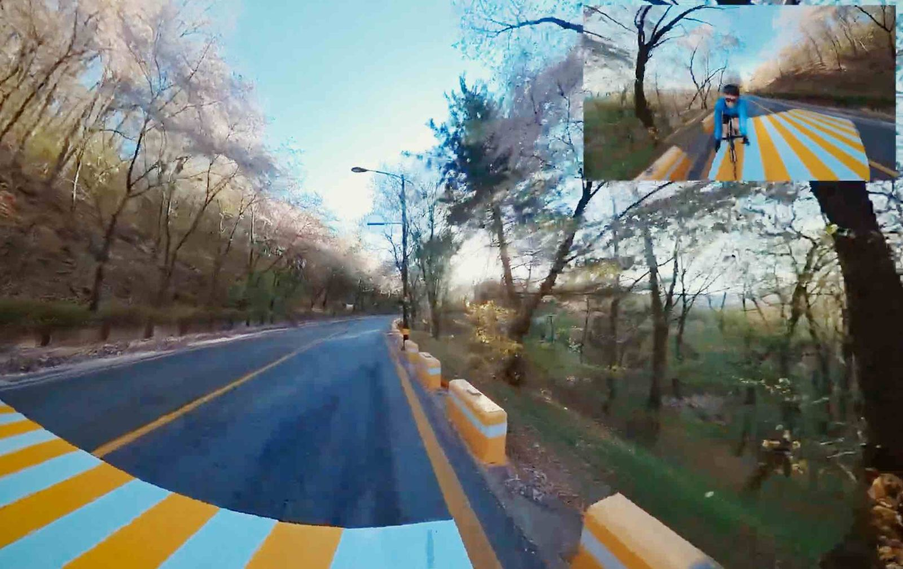
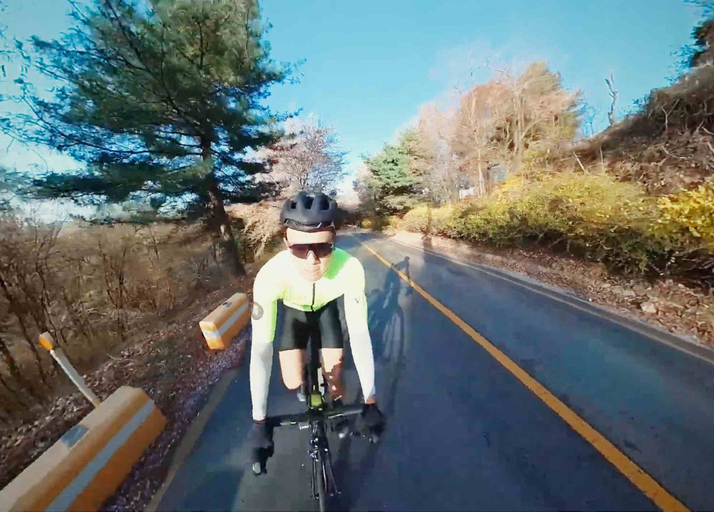
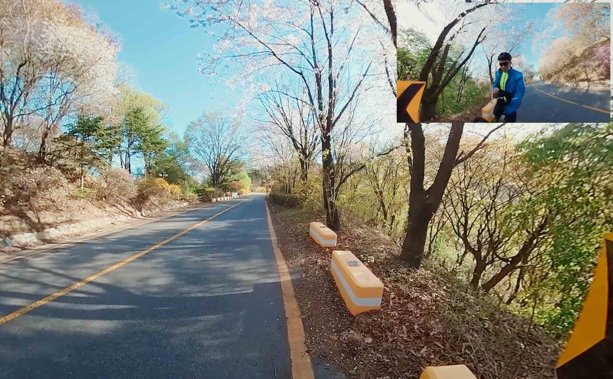
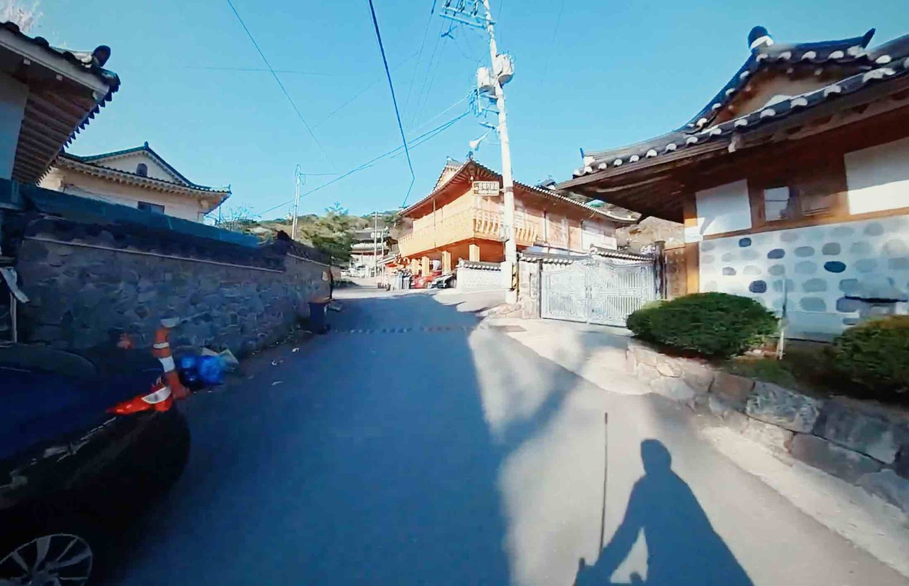
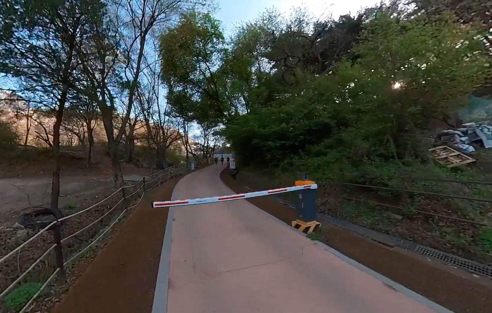
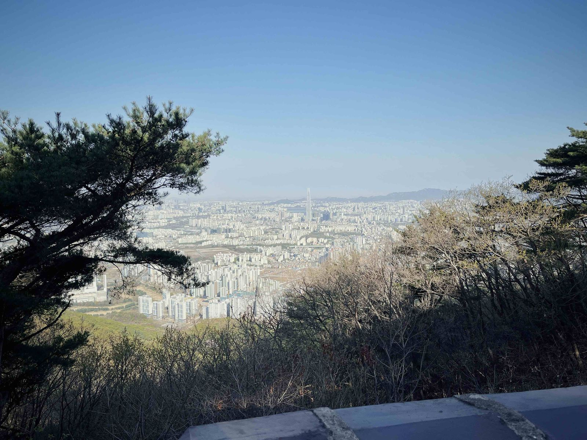
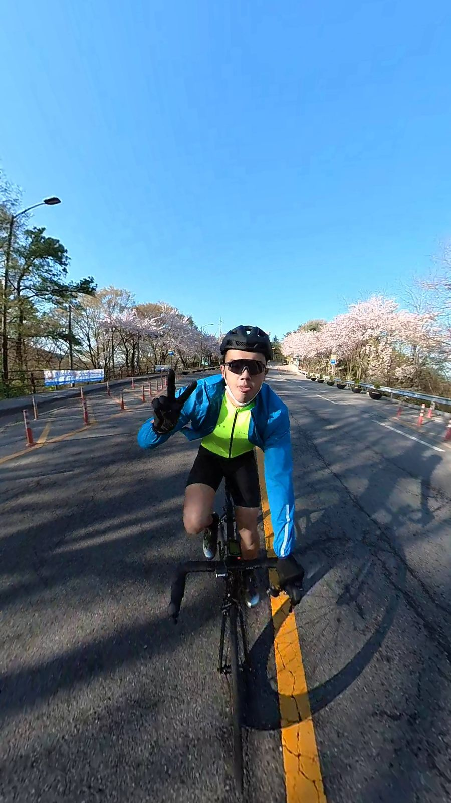

Namhansanseong is a historic mountain fortress city located 25 kilometres southeast of Seoul in Gyeonggi Province, South Korea.
This trip happened in 2022. I just picked up cycling and I knew I wanted to travel around with my bike.
From Myeongdong, I made my way to the Han River before heading south towards Seongnam.

From there, I entered Namhansanseong from the southern gate.

The start was very pretty steep. The grade was consistently at 10%+.

It was a jacket on, jacket off, situation for me.

I felt the early spring chill again when the gradient eased up. Had to put on the jacket again.

I arrived at the bottom of the fortress. There is a hanok village. It was beautiful.

You cannot cycle around the fortress area. So, I dismount from the bike and started walking instead.

Namhansanseong wasn’t a difficult mountain to climb and I think it’s definitely a historical site worth visiting. I might want to do hike up here next time!

Cherry Blossom roads on my way back to Seoul.